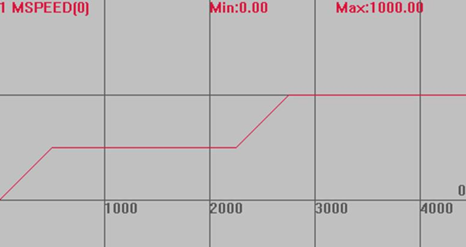

|
类型 |
轴参数 |
|
描述 |
轴速度，单位为units/s。 若脉冲当量设为1mm脉冲数，SPEED速度设100，则每秒移动100mm。
当多轴运动时，作为插补运动的速度。 SPEED修改后，立刻生效，可以实现动态变速，但是改变瞬间会抖。希望平滑变速请使用SPEED_RATIO指令。 当SP指令的FORCE_SPEED大于SPEED时，SPEED速度也会生效(140716以后版本SPEED不起作用)。 |
|
语法 |
可读：VAR1 = SPEED或VAR1 = SPEED(轴号) 可写：SPEED = expression或SPEED(轴号) = expression |
|
适用控制器 |
通用 |
|
例子 |
BASE(0) UNITS=100 '脉冲当量 SPEED =500 '设置0轴速度500units/s ACCEL=1000 '加速度1000units/s/s DPOS=0 '坐标清0 TRIGGER '自动触发示波器 VMOVE(1) '持续运动 WAIT UNTIL DPOS(0)>1000 '等待轴0运行到1000 SPEED=1000 '速度改为1000
速度曲线 MSPEED(0)垂直刻度1000  |
|
相关指令 |